Business Intelligence
Big Data
Definition Big Data
McKinsey&Company
Big data refers to datasets whose size is beyond the ability of typical database software tools to capture, store, manage, and analyze.
Gartner
Big data is high-volume, high-velocity and high-variety information assets that demand cost-effective, innovative forms of information processing for enhanced insight and decision making.
Big Data Entwicklung
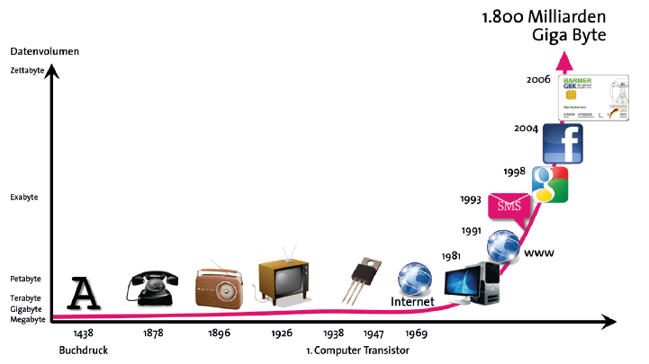
Typische Quellen

Moderne Quellen
In den letzten Jahren gewachsen
- Media - Videos, Bilder, Musik (Netflix, Youtube, TikTok, Instagram)
- Social Media (Twitter, Facebook)
- Cloud computing
- Web
Wachstumspotential in der Zukunft
- IoT
- Digitalisierung (Crypto Währungen, Dokumente)
- Bots und AI
Big Data Kontext
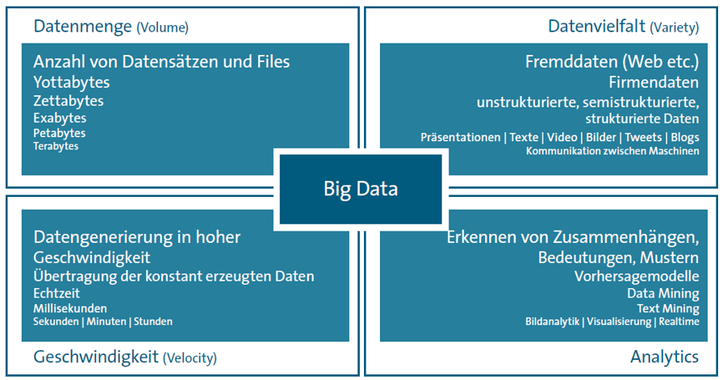
Profiteur Facebook
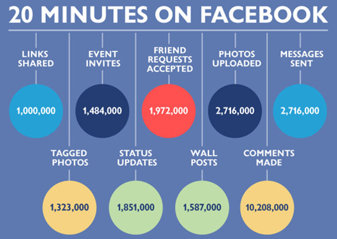
$562.19 Billion - 8th most valuable company (03-2023)
Social Media in 2018
Jede Minute werden
- 527.760 Bilder auf Snapchat gepostet
- 120 neue Accounts auf LinkedIn erstellt
- 4.146.600 Youtube Videos gestartet
- 456.000 tweets on Twitter gepostet
- 46.740 Bilder auf Instagram gepostet
- 13 neue Songs auf Spotify veröffentlicht
- 45.788 Uber Fahrten durchgeführt
Profiteur öffentliche Institutionen (staatlich)
- Open data Initativen
- Verteidigung
- Öffentliche Sicherheit
- Infrastruktur und Verkehr
- Gesundheit
- Energie
- Klima
Open data Initativen
Die Ausgaben und Verwaltungsdaten des Staats sollen dem Bürger transparent zur Verfügung gestellt werden
In den USA "Fifth Open Government National Action Plan to Advance a More Inclusive, Responsive, and Accountable Government"
In Deutschland § 12a EGovG (Erstes Open Data Gesetz)
Ergebnis der Initiative zu sehen auf govdata.de
Verteidigung
PRISM
Planning tool for Resource Integration, Synchronization and Management
Verteidigung
LKA Niedersachsen
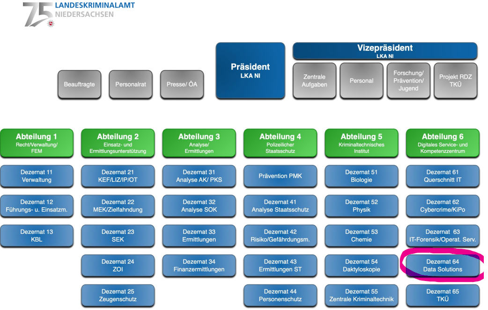
Öffentliche Sicherheit

Infrastruktur und Verkehr
- Fahrzeugdaten - Unfälle, Stau, Fahrverhalten
- Optimierung von Straßennetzen (Kreisel, Spurenanzahl, Ampelphasen)
- Nahverkehr Auslastung (Arbeitswege, Bildungseinrichtungen)
- Wartung und Sicherheit (Brücken und Straßenintegrität)
Gesundheit
Beispiel Krankenkasse AOK
- 24 Millionen Versicherte
- jährlich 6 Millionen Behandlungsfällen
- jährlich besuchen die Versicherte 2.000 Krankenhäuser
- jährlich 55 Millionen Diagnosen
- jährlich 18 Millionen Prozeduren
- jährlich 55 Millionen Entgeltinformationen
Analyse der Krankheitsrisiken, Medikamentenbedarf
Hasso Plattner-Institut - Genetik, komplexe Berechnung von genetischen Veränderungen
Energie
International - Handel
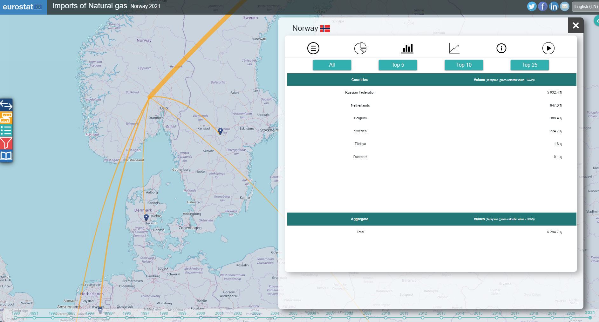
Energie
National - Verteilung und Verbrauch
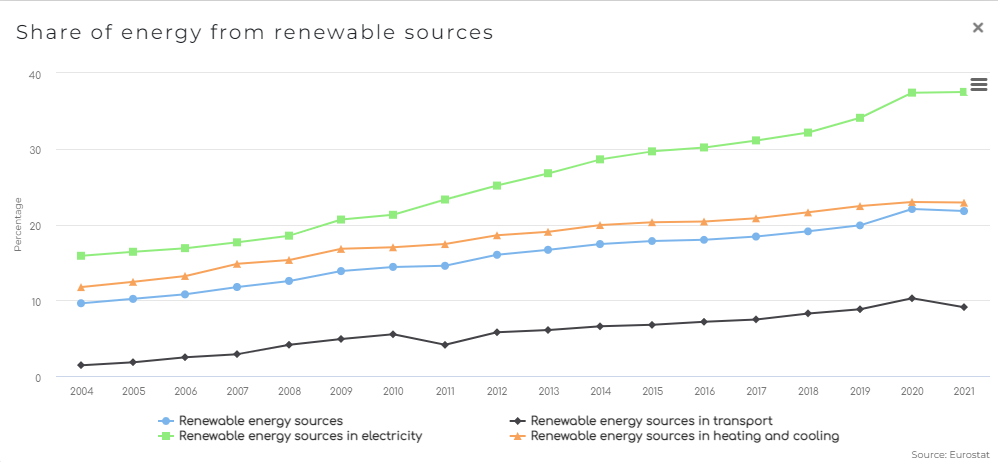
Klima
Sensorendaten vereinen
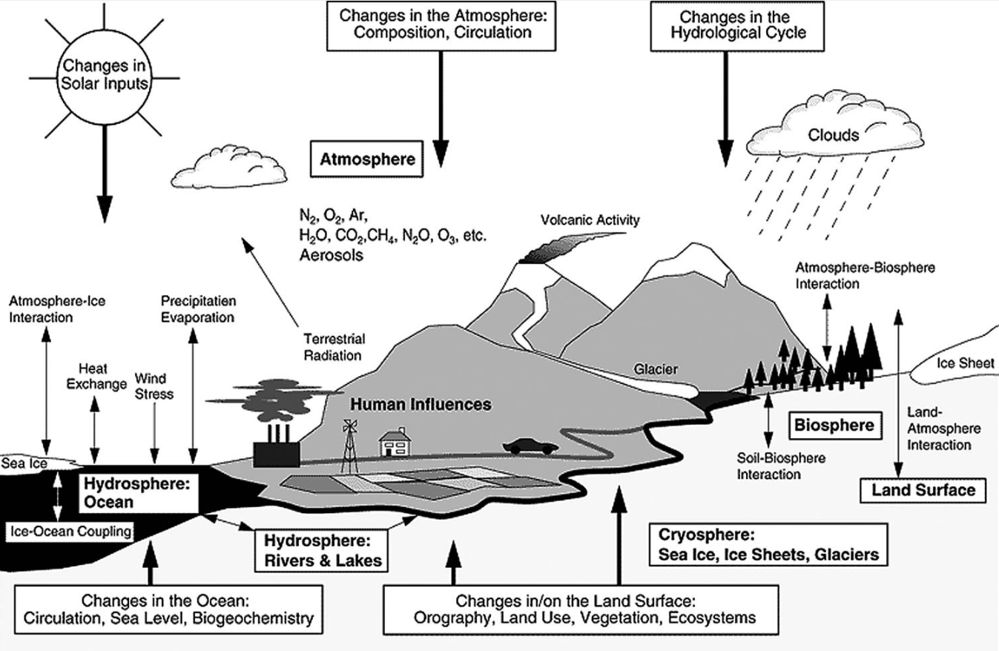
Big Data in der Wirtschaft
Wettbewerbsvorteile
- Daten werden durchsuchbar wie z.B. Dokumente
- Mehr Datenmenge (z.B. Transaktionen) können gespeichert werden
- Genauere Segemtierung von Entitäten wie z.B. Kunden
- Eine größere Vielfalt von Daten bedeutet auch mehr Analytische Auswertungsmöglichkeiten
- Unterstützung von Forschung und Entwicklung
Twitter prediction

Big Data im privaten - Smart Home und IoT
- Energieeffizienz
- Hausarbeiten
- Sicherheit
- Babysitting
- Gesundheit und Altersfürsorge
- Unterhaltung
- Automatisierter Einkauf
- Wartung Haushaltsgeräte
Big Data in der Politik
Von BI zu Big Data
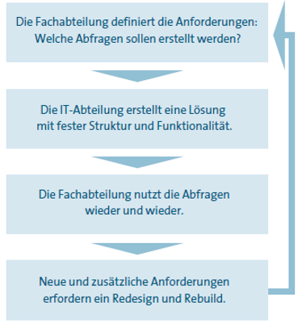

Integration von Big Data in die BI-Landschaft
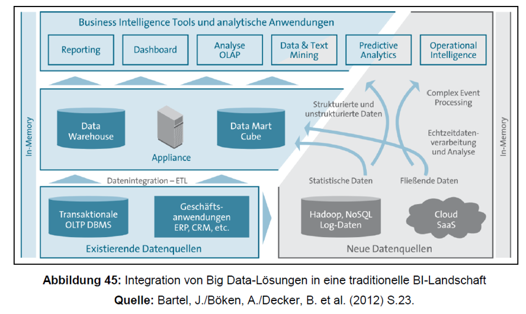
Big Data Technologien
- Storage
- Mining
- Analytics
- Visualization
Storage
NoSQL Datenbanken
- Bessere Horizontale Skalierung als SQL-DBs
- Vier Arten: Column-oriented, Key-Value, Document, Graph
- Datenbanken MongoDB, HBase, Neo4j, Cassandra, ...
Hadoop - HDFS
- Hadoop ist das Java-Framework welches den MapReduce Algorithmus nutzt
- HDFS ist das Hadoop Distributed File System welches Dateien in festen Blocks auf Knoten verteilt
- Große Dateien sind besser geeignet, kleinere Files können in NoSQl DBs gespeichert werden
Dateien vs. Datensätze in einer DB
MapReduce
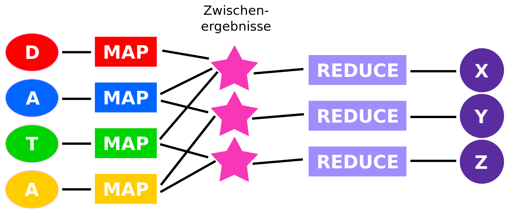
Analytics - Spark - Splunk

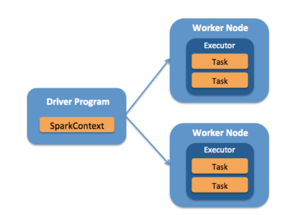
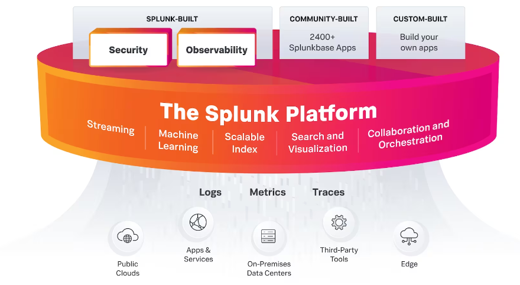
Mining - KNIME
- Java Open-Source client (Server-Variante Proprietär)
- KNIME-Knoten (nodes) sind eigenständige Java Verarbeitungsschritte
- Nodes können als Java Klassen geschrieben und geteilt werden (Community)
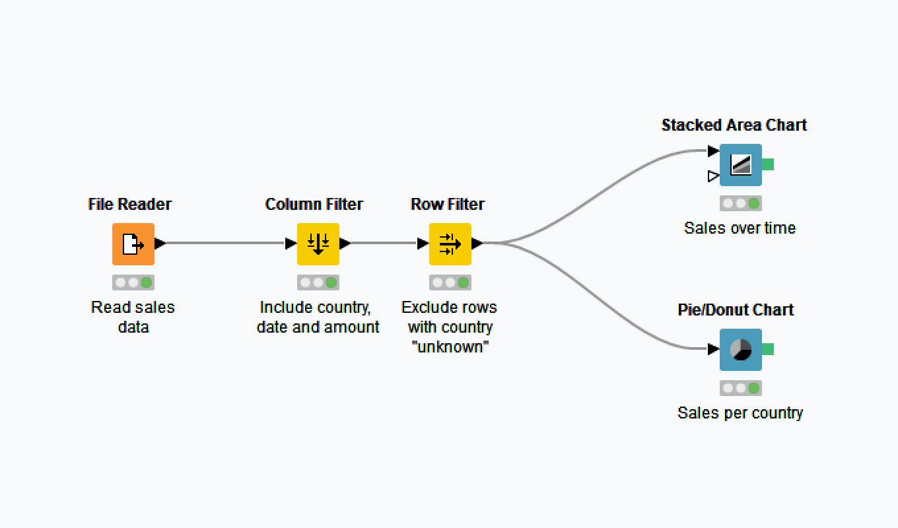
Visualisation
- Reguläre BI-Tools wie Tableau, Power BI
- Grafana, D3
- Analytics-Toolstacks wie KNIME und Splunk bringen eigene Visualisation Frameworks bereits mit
- Eigenständig entwickelte Web-Frontends
Visualisation
- Data Sampling und Aggregation nötig für Reporting
- Hierarchische Visualisierungstechniken wie Tree maps
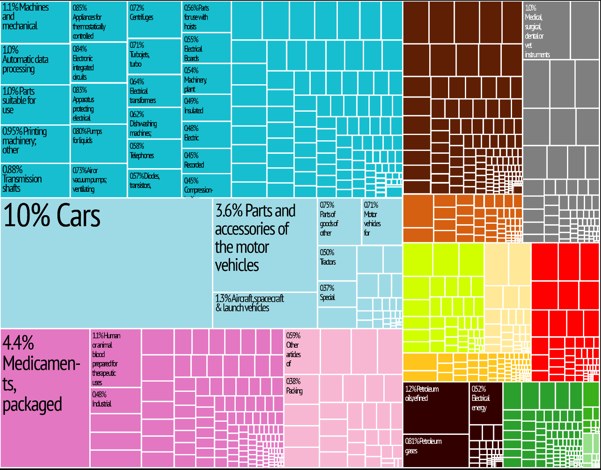
In-memory Datenbanken
- SAP HANA
- Anstelle von regulären SSD oder HDD wird, RAM also flüchtiger Speicher verwendet
- Regelmäßige Snapshots in persistierten Speicher
Lake Warehouse
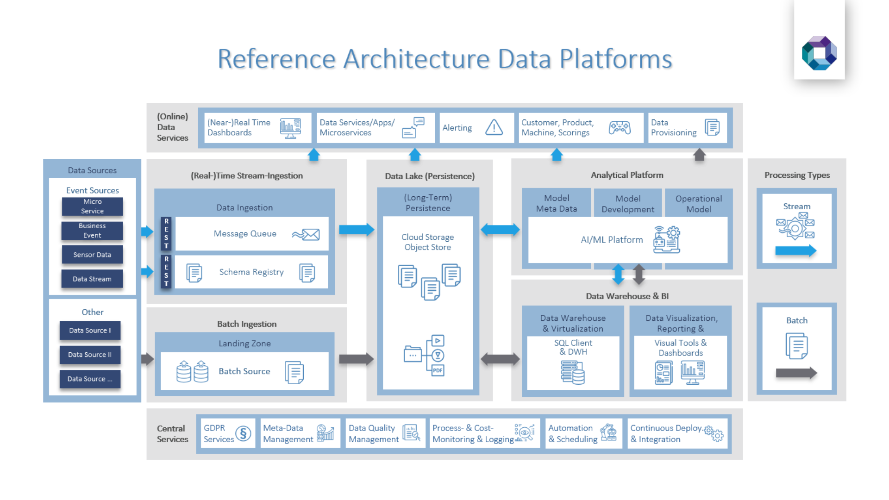
Big Data Gefahren
- Gezielte Beeinflussung von Bürgern in demokratischen Prozessen
- Privatsphäre von Personen ist gefährdet
- Sicherheit von IT-Systemen nicht immer gewährleistet, Datenleaks sind schwerwiegender
- Unethische Nutzung z.B. Krankenkassen fordern höhere Beiträge von Menschen die potentiell schwer erkranken könnten
- Verbreitung von fake news
- Falsche Interpretation aufgrund von großer Datenmenge und Komplexität
Probleme von Big Data
- Teams sind unterbesetzt
- Schnelle Entwicklung hängt Teams ab
- Veraltete Systeme (kein Support und Weiterentwicklung)
- Datenqualität
- Kosten
- Sicherheit
- Gesetzliche Beschränkungen
- Kultur und Politik